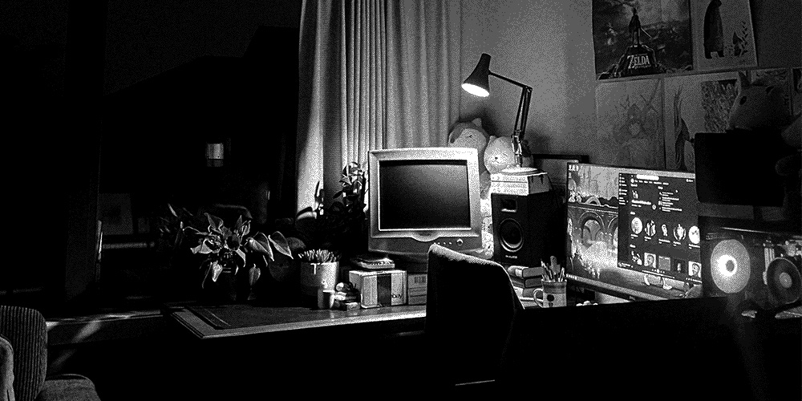

Journal Mapping
Here's a question: why do a dream diary and a 'real' one need to constitute two disconnected things? There could be real emotional and creative value latent in superimposing the dream world atop the maps, photographs and sensations that make up our regular plane of existence. We were excited about producing the print layouts in dreams (largely due to its adjacency to our time at school); taking full advantage of these learned techniques could be really quite worthwhile; producing zines, spreads, and music to accompany both.